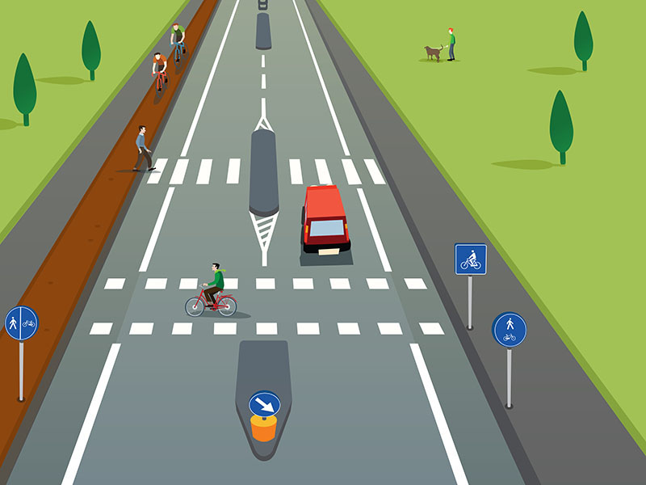

La strada

La strada è un'area aperta alla circolazione dei pedoni, degli animali e dei veicoli.
Può essere a senso unico o a doppio senso di circolazione.
Può essere suddivisa in più carreggiate in presenza di uno spartitraffico.
Comprende:
Può essere a senso unico o a doppio senso di circolazione.
Può essere suddivisa in più carreggiate in presenza di uno spartitraffico.
Comprende:
- le carreggiate, riservate a veicoli ed animali
- le banchine ed i marciapiedi, riservati ai pedoni
- le piste ciclabili, riservate alle biciclette